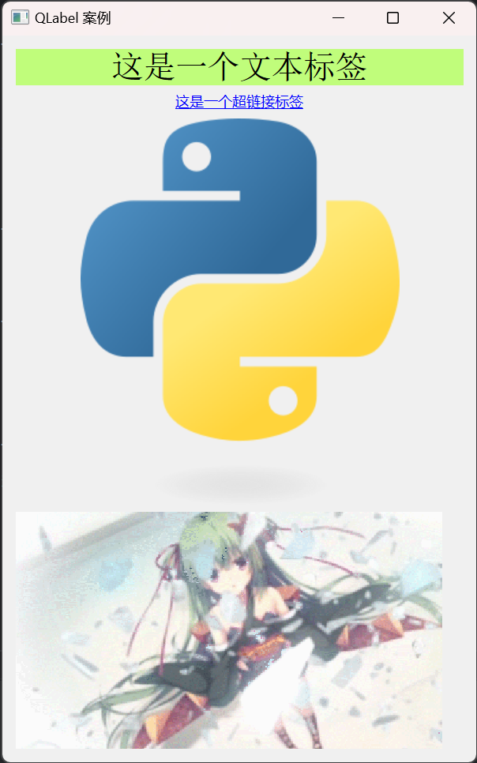
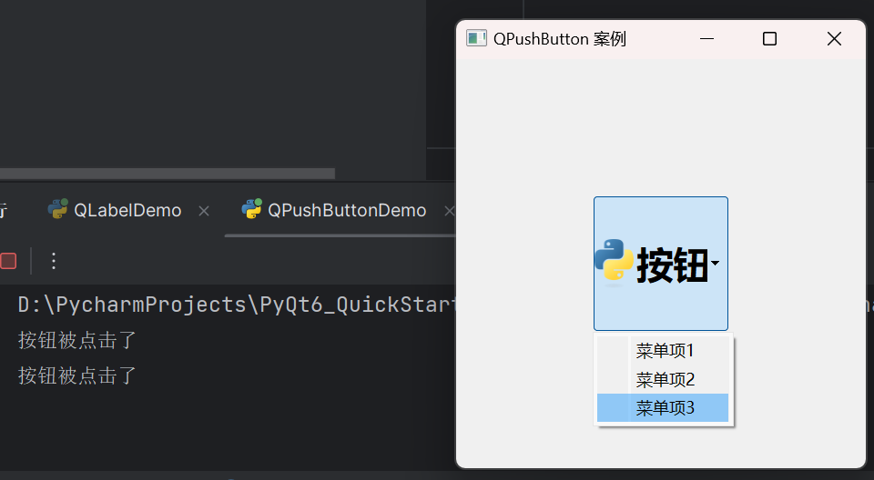

QLabel
QLabel 是一个用于显示文本或图像的组件，它可以显示纯文本、超链接、图像、HTML文档等。
QLabel 案例
项目根目录下创建 PartTwo 文件夹，导入素材，创建 QLabelDemo.py 文件，编写如下代码：
1
2
3
4
5
6
7
8
9
10
11
12
13
14
15
16
17
18
19
20
21
22
23
24
25
26
27
28
29
30
31
32
33
34
35
36
37
38
39
40
41
42
43
44
45
46
47
48
49
50
51
52
53
54
55
56
57
58
59
60
61
62
63
64
65
| import sys
from PyQt6.QtCore import Qt
from PyQt6.QtGui import QColor, QPixmap, QMovie, QFont
from PyQt6.QtWidgets import QApplication, QWidget, QLabel, QVBoxLayout
class QLabelDemo(QWidget):
def __init__(self):
super().__init__()
self.init_ui()
def init_ui(self):
self.setWindowTitle('QLabel 案例')
self.resize(400, 300)
label1 = QLabel('这是一个文本标签')
label1.setText('这是一个文本标签')
label1.setFont(QFont('Arial', 20))
label1.setAutoFillBackground(True)
palette = label1.palette()
palette.setColor(label1.backgroundRole(), QColor(192, 253, 123))
label1.setPalette(palette)
label1.setAlignment(Qt.AlignmentFlag.AlignCenter)
label2 = QLabel('这是一个超链接标签')
label2.setText('<a href="//www.baidu.com">这是一个超链接标签</a>')
label2.setOpenExternalLinks(True)
label2.setAlignment(Qt.AlignmentFlag.AlignCenter)
label3 = QLabel('这是一个图片标签')
label3.setAlignment(Qt.AlignmentFlag.AlignCenter)
label3.setPixmap(QPixmap('./images/python.png'))
label4 = QLabel('这是一个动图标签')
label4.setAlignment(Qt.AlignmentFlag.AlignCenter)
label4.setMovie(QMovie('./images/动图.gif'))
label4.setScaledContents(True)
label4.setFixedSize(360, 200)
label4.movie().setSpeed(200)
label4.movie().start()
vbox = QVBoxLayout()
vbox.addWidget(label1)
vbox.addWidget(label2)
vbox.addWidget(label3)
vbox.addWidget(label4)
self.setLayout(vbox)
if __name__ == '__main__':
app = QApplication(sys.argv)
window = QLabelDemo()
window.show()
sys.exit(app.exec())
|
效果：

QPushButtton
QPushButton 是一个按钮组件，它可以包含文本或图标。
QPushButton 案例
创建 QPushButtonDemo.py 文件，编写如下代码：
1
2
3
4
5
6
7
8
9
10
11
12
13
14
15
16
17
18
19
20
21
22
23
24
25
26
27
28
29
30
31
32
33
34
35
36
37
38
39
40
41
42
43
44
45
46
47
| import sys
from PyQt6.QtCore import QSize
from PyQt6.QtGui import QFont, QIcon
from PyQt6.QtWidgets import QApplication, QWidget, QPushButton, QMenu
def on_click():
print('按钮被点击了')
class Window(QWidget):
def __init__(self):
super().__init__()
self.setWindowTitle('QPushButton 案例')
self.create_button()
def create_button(self):
button = QPushButton('按钮', self)
button.setGeometry(100, 100, 100, 100)
button.move(100, 100)
button.setFont(QFont('微软雅黑', 20, QFont.Weight.ExtraBold))
button.setIcon(QIcon('./images/python.png'))
button.setIconSize(QSize(36, 36))
menu = QMenu()
menu.addAction('菜单项1')
menu.addAction('菜单项2')
menu.addAction('菜单项3')
menu.triggered.connect(on_click)
button.setMenu(menu)
if __name__ == '__main__':
app = QApplication(sys.argv)
window = Window()
window.show()
sys.exit(app.exec())
|
效果：
